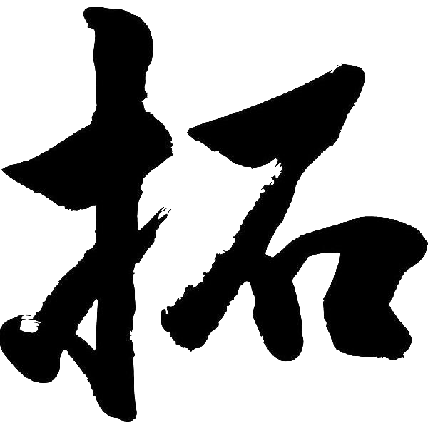
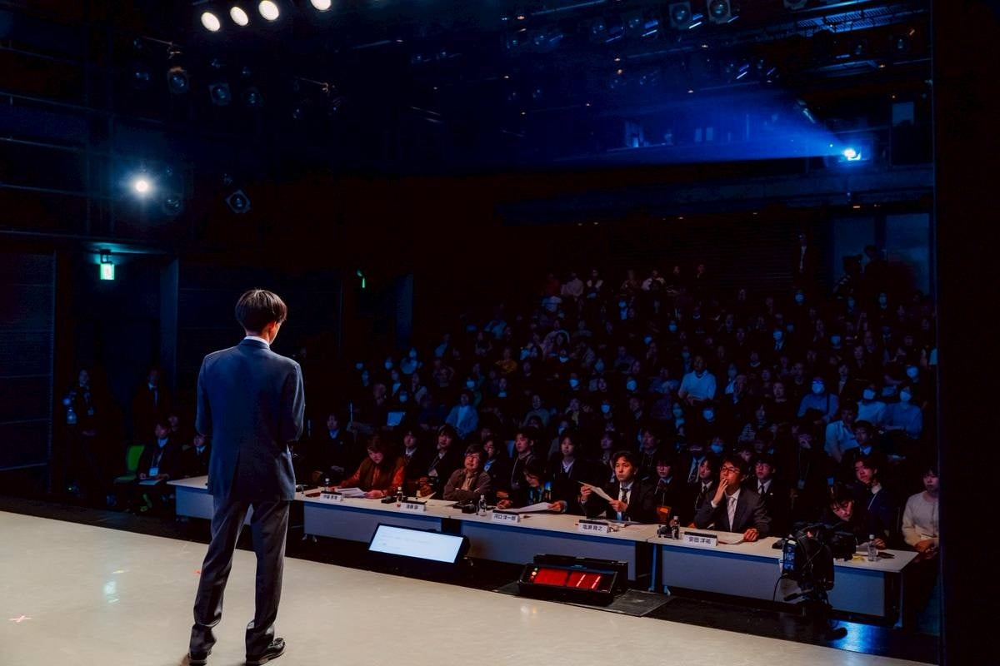
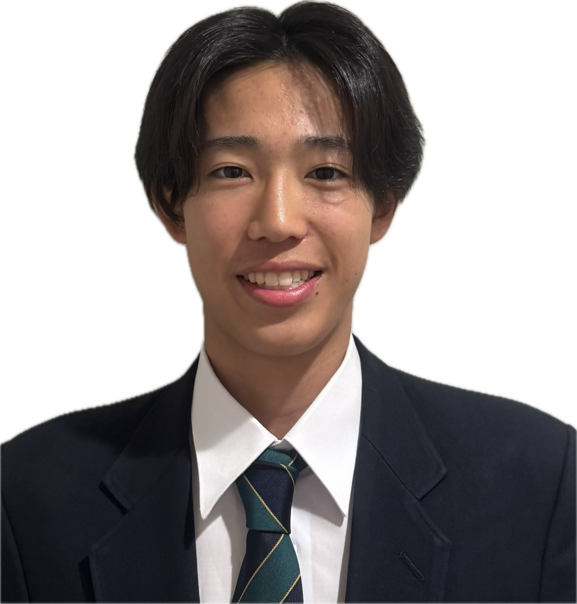

Vision & Mission
「生まれた環境に関係なく、すべての若者が社会を動かす側に立てる日本」
若者が政治に無関心なのではない。政治に関わる機会を持てていないだけだ。
教育格差、医療・科学技術へのアクセス格差、難民の生活格差——
それらの根底にあるのは「誰にどんな機会を保障するか」を決める政策・法律の問題だ。
拓（TACK）は、その政策形成プロセスから若者が排除されている構造そのものを変えにいく。
Basic Policy
政治参加は、意識の高い一部の若者だけのものではない。どんな背景を持つ若者にも開かれた場をつくる。「構造の問題」として捉え、制度から変える。
「なんとなくこう思う」ではなく、データと構造分析をもとに提言する。若者だからと言い訳せず、本物の課題に本気で向き合う。
政治から最も遠い場所にいる人たちを、議論の中心に置く。声を届けられない人の代わりに声を上げる意識を、すべての活動の軸に据える。
Departments
Parliamentary Policy
若者と社会・議員をつなぐイベントの企画・運営が主軸。関西ユースサミット型の大規模イベントを通じて、政策提言への土台をつくる。
Education Access
教育機会の格差をデータで可視化し、給付型奨学金や学校外教育支援の政策提言につなげる。
Medical & Science
NIRSを活用して医療・リハビリ格差の実態をエビデンスで示し、政策に結びつける。拓全体のエビデンス基盤として機能する。
International Coexistence
当事者インタビューと政策リサーチで制度の壁を可視化し、共生社会の実現に向けた提言の土台をつくる。
Joint Event
それぞれの専門性で掘り続けた問いと提言を持ち寄り、
議会・社会に向けて一本の声として届ける。
専門性が重なるからこそ、提言に厚みと説得力が生まれる。
Upcoming Event
中高生が議員と対話し、関西の未来に本気の提言を。
学生団体「拓」と日本維新の会学生部の共催。参加費無料。大阪・京都・兵庫・奈良・滋賀・和歌山の中学生・高校生を募集します。
Members

Founder & President
KOMATSUZAWA TAKATO

Founder's Message
社会は、誰かが動かなければ変わらない。
その「誰か」に、若者がなれない理由はない。
拓は、2025年に前身団体ARUKIZASUとして産声を上げ、
2026年春、事業拡大とともに学生団体 拓（TACK）へと生まれ変わった。
名前の由来は「荒野を切り拓く」——誰も踏み込んでいない場所に、
自分たちの手で道をつくるという意志だ。
医療格差で機会を奪われた子ども、声を届けられない難民、
制度の外に置かれた若者たち——
社会の問題は、知れば知るほど「他人事」ではなくなる。
拓は、その怒りや問いを、具体的な提言と研究に変えて社会に届ける場だ。
最先端のリハビリ技術は、お金のある施設にしか届いていない。どの病院に生まれたかで、回復できるかどうかが変わる——それは「運」ではなく、制度の失敗だ。科学の力でその格差を数値化し、保険適用・普及の政策につなげる。
若者が政治に無関心なのではない。関心を持てないシステムの中に閉じ込められているだけだ。意見を言う場がない、届く仕組みがない、変わる実感が持てない——その構造そのものを変えにいく。
塾に通えるかどうかで、将来の選択肢が変わる社会はおかしい。教育格差はスタートラインの問題であり、その後の人生全体に影響する構造的な問題だ。データで実態を示し、すべての子どもに同じ出発点を保障する制度を求めていく。
感情論ではなく、エビデンスと具体的な提案で動く。現状の制度に何が足りないかを研究し、「こう変えれば解決できる」という政策を自分たちで設計する。社会課題を嘆くだけでなく、答えを出しにいく集団でありたい。
専門知識も経験も問わない。
「このままでいいのか」という感覚を持っているなら、
それだけで、ここに来る理由になる。
Roadmap
総合開拓者サミット2026 / 〜2026年末
SNSフォロワー1,000人 / 〜1年
複数テーマでの提言実績 / 〜2〜3年
長期目標